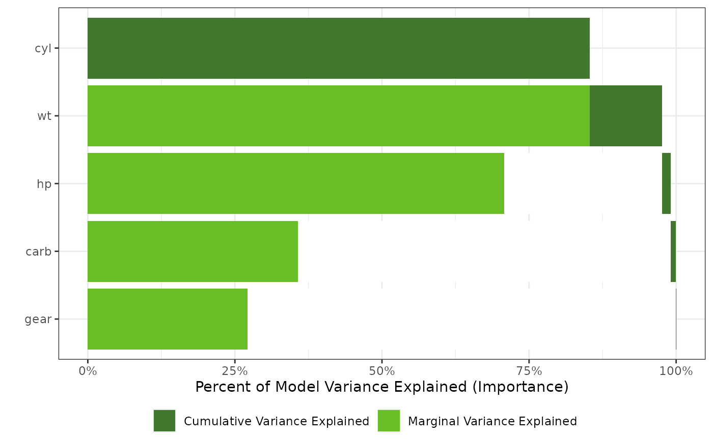

Plot an Importance Plot object
Arguments
- x
a
importance_plotobject- plot
boolean to determine if the plot is displayed, or just returned
- nvar
the number of variables to plot in order of importance
- col_imp_alone
the color used for the variance explained by each variable alone
- col_imp_cumulative
the color used for the cumulative variance explained
- geom_bar_control
list of arguments to control the plotting of
ggplot2::geom_bar- ...
future arguments
Examples
gtest <- lm(mpg ~ cyl + wt + hp + gear + carb, data = mtcars)
gtestreduced <- lm(mpg ~ 1, data = mtcars)
imp <- importance(gtest, gtestreduced)
plot(imp)

gtest <- survival::survreg(survival::Surv(futime, fustat) ~ ecog.ps*rx + age,
data = survival::ovarian,
dist = "weibull")
imp <- importance(gtest, survival::ovarian, nperm = 50)
plot(imp)